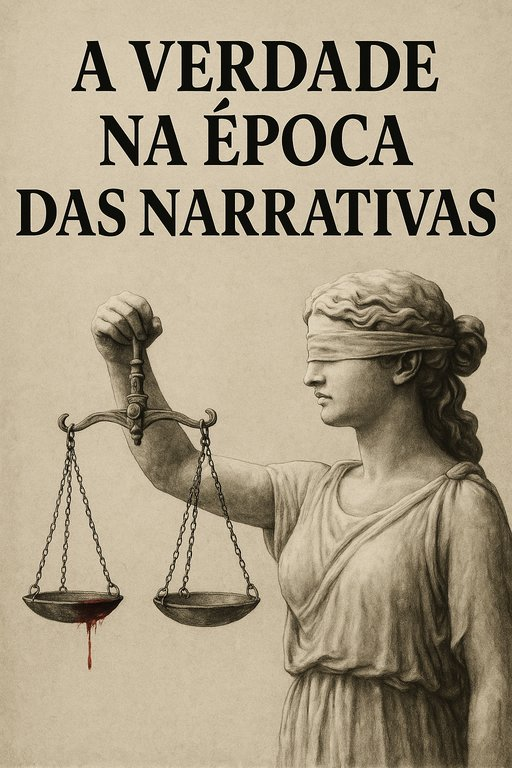

Publicado em 2025-06-03 09:11:22
"A verdade morreu. Vive a versão oficial."
Vivemos tempos em que a verdade se tornou um luxo, uma excentricidade para românticos incuráveis. O mundo moderno, munido de tecnologia e instantaneidade, deu o último golpe na verdade objetiva, substituindo-a por um novo deus: a narrativa bem contada.
Antes, o poder escondia a verdade. Agora, reescreve-a com orquestra, luzes e transmissão em direto. A verdade não é mais descoberta, é fabricada, como um produto de marketing.
Basta uma história empática, um rosto inocente, um fundo musical comovente — e o crime transforma-se em drama, o criminoso em vítima, a indignação em like.
A investigação criminal cedeu lugar à gestão de reputação. Os tribunais substituem-se pelos platós. E se a realidade não colabora, muda-se o argumento.
O facto tornou-se incômodo. Um obstáculo à empatia mediática. O mundo é agora regido por emoções, e os factos são despachados como "irrelevantes" se não couberem na narrativa dominante.
Nos tribunais do público, não importa o que se passou, mas sim o que se sente. A dúvida não é explorada, é cancelada. E quem questiona é rotulado de conspiracionista, insensível ou perigoso.
Os poderosos descobriram o truque: nada é imperdoável quando se domina a narrativa. Um crime hediondo pode ser lavado com conferências de imprensa bem coreografadas e silêncios comprados. A consciência, essa voz moral que um dia gritava dentro de nós, foi substituída por assessores de imagem.
Vivemos num tempo em que se pode matar, mentir, ocultar, e ainda assim manter um ar respeitável. Porque a sociedade moderna não quer a verdade: quer conforto emocional e histórias bem embaladas.
Cada vez que aceitamos uma versão fabricada, um facto ignorado, um silêncio conveniente, participamos no funeral da verdade. Tornamo-nos espectadores de um teatro cruel, onde a moral é figurante, e a mentira é protagonista.
Aceitar a mentira por comodidade é o primeiro passo para aceitar a injustiça como rotina.
Resta-nos a filosofia, essa arte velha e rebelde de perguntar quando todos aplaudem. Resta-nos o pensamento crítico, o inconformismo, a coragem de dizer que o rei vai nu.
Porque enquanto houver quem insista em escavar a verdade, mesmo debaixo dos escombros da propaganda, haverá ainda uma centelha de lucidez neste mundo anestesiado.
Não é apenas uma questão de justiça. É uma questão de sobrevivência moral.
Francisco Gonçalves, 2025. Escrito com o coração ferido e a lucidez por companheira.